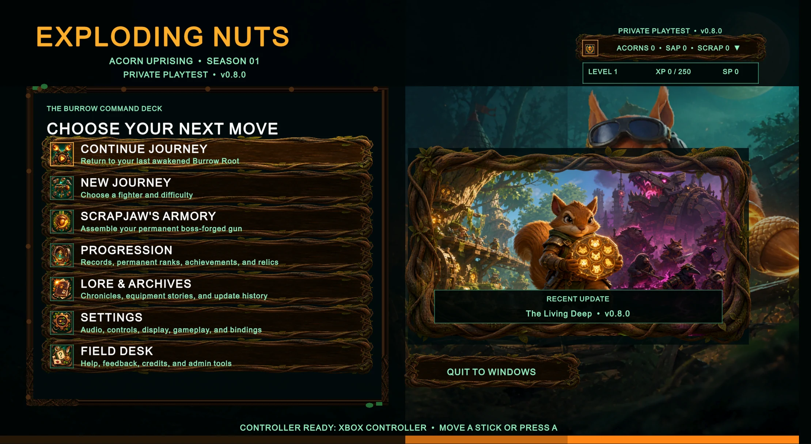
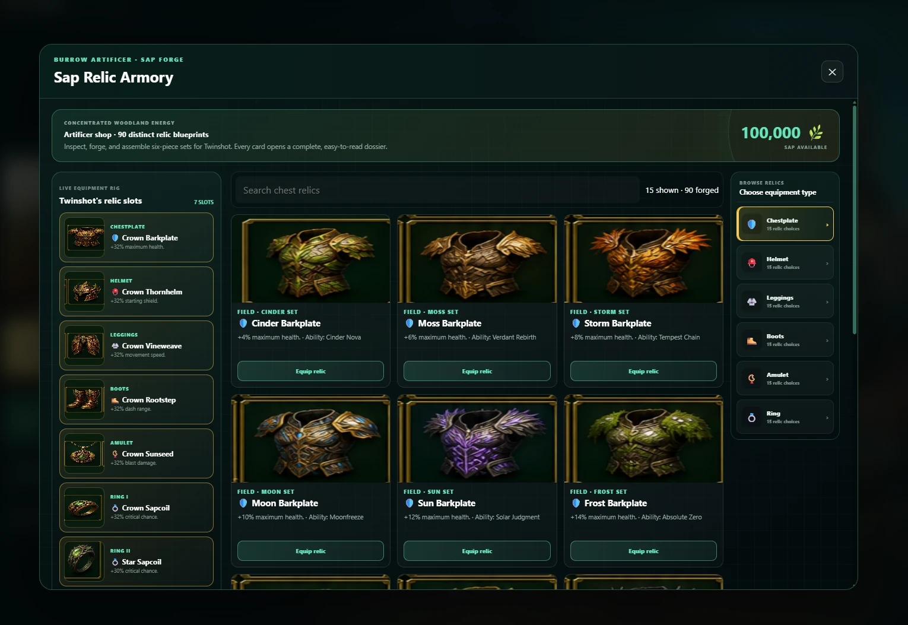

Exploding Nuts.
An arena roguelite that grew from a browser prototype into Unity and C#.

Then / BrowserStart with
Start with
the game loop.
I started with HTML, CSS, and JavaScript: fighter and arena selection, difficulty settings, run modifiers, collections, and a relic armory.
The browser version gave me a place to build menus, progression, and interconnected game systems before moving into a larger engine.

Now / Unity & C#Carry the idea
Carry the idea
into 3D.
I carried the concept into Unity and C#, developing standalone gameplay, controller-ready menus, and a live weapon assembly preview.
The project pushed me from smaller web interactions into larger game architecture and iteration. It remains a prototype and learning project.